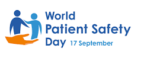

World Patient Safety Day Website
Features & Section Overview
1. Elegant Header & Navigation
- Sticky, always-visible header with your logo and clear navigation links.
- Smooth scrolling to all main sections: About, Focus Areas, Schedule, Testimonials, Registration.
- Prominent “Register Now” button for easy access.
2. Hero Section
- Eye-catching event title and theme.
- Automatically updating event date (September 17, every year).
- Animated countdown timer to the event.
- Live counters for expected participants and speakers.
- Professional hero image with branding.
3. Key Focus Areas
- Visually engaging cards for each focus area:
- Newborn & Child Safety
- Healthcare Professional Training
- Community Awareness
- Parent & Family Engagement
- Policy & Advocacy
- Public Service Outreach
4. Event Schedule
- Interactive, card-based schedule with all sessions, speakers, and locations.
- Expandable details for each session.
- “Add to Calendar” options for Google, Outlook, Yahoo, and Apple.
5. Patient Safety Statistics
- Four visually striking stat cards highlighting:
- Number of professionals trained
- Participating hospitals
- Regions engaged
- Year of renewed commitment
6. Testimonials
- “Voices from Somalia’s Healthcare Experts” section.
- Real testimonials with photos, names, roles, and star ratings.
- Modern, easy-to-browse layout.
7. Media Section
- Embedded YouTube video showcasing event highlights.
- Supporting text: “Documenting our progress in making healthcare safer for everyone.”
8. Registration Form
- Modern, accessible, and visually integrated form.
- All required fields with real-time validation.
- Confirmation message after submission.
- Privacy notice for user trust.
9. Sponsors & Partners
- Auto-sliding carousel of sponsor logos.
- All logos are visible, interactive, and responsive.
10. Event Location
- Embedded Google Map showing Mogadishu, Somalia.
- Subtle, visually integrated map card.
11. Footer
- Quick links to all main sections and legal policies.
- Contact information (email, phone, address).
- Social media icons.
- Downloadable resources (concept note, event materials).
- Copyright.
12. Legal & Policy Pages
- Privacy Policy, Terms of Service, Cookie Policy.
- Accessible from the footer, styled consistently.
13. 404 Not Found Page
- Friendly, branded error page for invalid URLs.
14. Technical Excellence
- Fully responsive and mobile-friendly.
- Optimized images and lazy loading for fast performance.
- Accessibility features for all users.
- SEO optimized for search engines.
- Modern security and performance best practices.